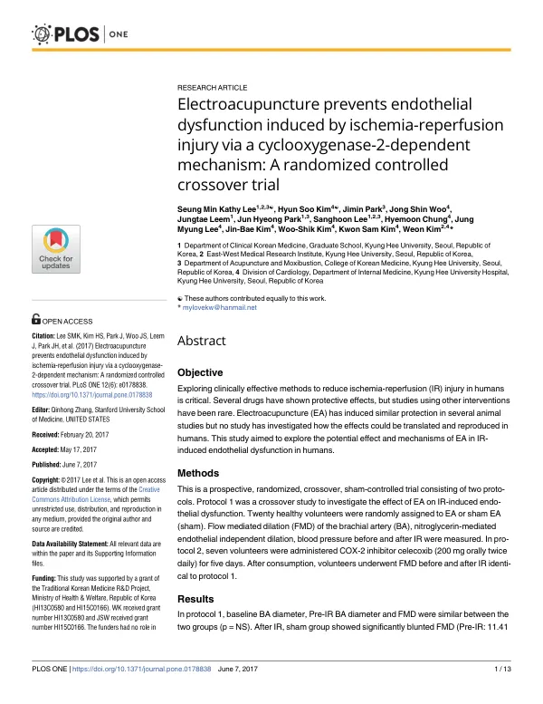

Electroacupuncture prevents endothelial dysfunction induced by ischemia-reperfusion injury via a cyclooxygenase-2-dependent mechanism: A randomized controlled crossover trial
Lee SMK, Kim HS, Park J, Woo JS, Leem J, Park JH, Lee S, Chung H, Lee JM, Kim JB, Kim WS, Kim KS, Kim W
PLOS ONE 12(6):e0178838

첫 장 · 오픈액세스First page · open access
논문 소개Summary
허혈-재관류 손상은 혈관 내피세포를 망가뜨리고 이는 관상동맥질환의 예후를 가르는 요인입니다. 동물실험에서 전침이 이를 막는다는 보고는 있었으나 사람에서 확인된 적은 없었습니다. 건강한 자원자 20명을 무작위로 나눈 교차 설계 시험에서, 가짜 전침군은 허혈-재관류 뒤 상완동맥 혈류매개확장이 11.41%에서 4.49%로 뚜렷이 떨어진 반면 전침군은 10.96%에서 9.47%로 유지되었습니다. 이어 자원자 7명에게 COX-2 억제제 셀레콕시브를 5일간 먹인 뒤 같은 시험을 하자 전침의 보호 효과가 완전히 사라졌습니다(11.05%→4.20%). 전침의 혈관 보호가 COX-2 경로를 거친다는 것을 사람에서 보인 연구입니다.
Ischemia-reperfusion injury damages vascular endothelial cells, an important independent predictor of prognosis in coronary artery disease. Animal studies had reported that electroacupuncture prevents this, but it had never been confirmed in humans. In a randomized crossover trial of 20 healthy volunteers, flow-mediated dilation of the brachial artery fell markedly after ischemia-reperfusion in the sham group (11.41% to 4.49%) while being preserved with electroacupuncture (10.96% to 9.47%). When seven volunteers then took the COX-2 inhibitor celecoxib for five days before the same procedure, the protective effect was abolished entirely (11.05% to 4.20%). The study demonstrates in humans that electroacupuncture's vascular protection operates through a COX-2 dependent mechanism.
인용Cite
Lee SMK, Kim HS, Park J, Woo JS, Leem J, Park JH, Lee S, Chung H, Lee JM, Kim JB, Kim WS, Kim KS, Kim W. Electroacupuncture prevents endothelial dysfunction induced by ischemia-reperfusion injury via a cyclooxygenase-2-dependent mechanism: A randomized controlled crossover trial. PLOS ONE. 2017;12(6):e0178838. doi:10.1371/journal.pone.0178838